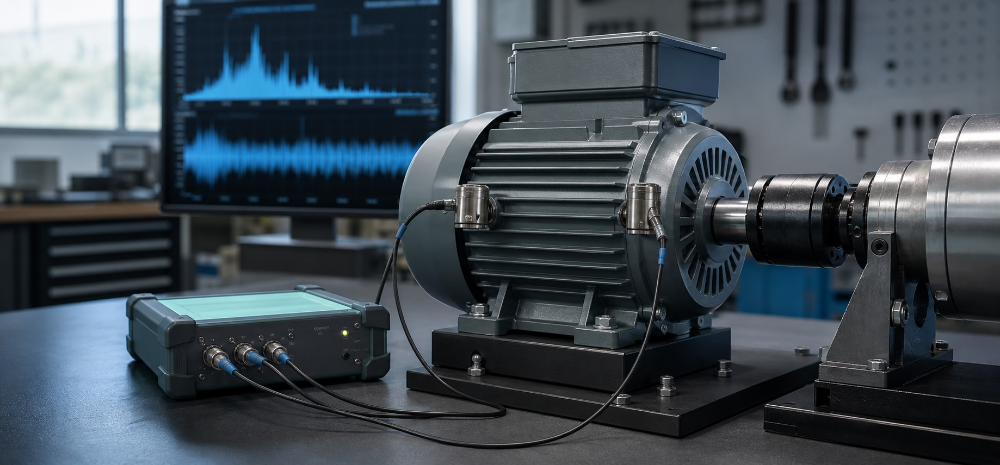

소음·진동 측정과 NVH 시험,
내부에 전문가가 없어도
해결할 수 있습니다.
제품 개발과 시험 과정에서 발생하는 소음·진동을 측정하고, FFT·Order Tracking 등 NVH 시험 데이터로 원인을 분석합니다. NVH 전담 인력이나 전문 계측 시스템을 갖추기 어려운 제조기업과 스타트업을 위해 필요한 시험부터 데이터 분석, 원인 규명, 시스템 구현까지 지원합니다.

+ + + +SYSTEM 01
이런 경우 상담해 보세요.
복잡한 시험 계획이 준비되어 있지 않아도 괜찮습니다. 현재 발생하고 있는 현상과 제품의 운전조건을 알려주시면, 필요한 측정과 분석 방법부터 함께 검토합니다.
특정 RPM이나 운전조건에서만 진동이 커집니다.
회전속도, 운전조건과 진동 데이터를 함께 분석해 가진 성분과 구조 응답을 구분합니다.
원인을 알 수 없는 소음이나 이음이 발생합니다.
소음과 진동을 동시에 측정해 발생원과 전달경로를 좁힙니다.
공진이 의심되지만 확인할 방법이 없습니다.
Impact Hammer Test와 운전 중 진동으로 고유진동수와 공진 여부를 확인합니다.
설계 변경 전후의 개선 효과를 정량적으로 확인하고 싶습니다.
동일 조건에서 반복 측정해 프로토타입 A/B/C의 개선 효과를 정량 비교합니다.
사내에 계측 장비가 없어 시험 자체가 어렵습니다.
가속도계·소음계·회전속도 취득 장비를 포함한 측정을 현장에서 직접 진행합니다.
데이터는 쌓이지만 어떻게 해석해야 할지 모르겠습니다.
보유한 데이터를 검토하고 원인 분석과 개선 방향에 대한 기술 자문을 제공합니다.
같은 시험을 매번 외부에 반복 의뢰하고 있습니다.
측정 절차와 판단 기준을 표준화해 사내 반복 운영 가능한 체계로 정리합니다.
NVH 전담 인력을 채용할 정도의 업무량은 아닙니다.
필요할 때만 사내 NVH 엔지니어처럼 문제를 함께 정의하고 해결하는 파트너십 형태로 지원합니다.
시험기관이 아닌, 문제 해결 파트너입니다.
요청한 시험 결과와 성적서를 전달하는 데서 멈추지 않고, 문제 정의부터 시험 설계, 측정, 원인 규명, 개선 방향까지 하나의 흐름으로 진행합니다.
문제 정의 및 진단
현상과 운전조건을 파악하고 필요한 측정 항목과 분석 방법을 결정합니다.
측정 및 신호 분석
가속도·소음·회전속도를 현장에서 취득하고 시간·주파수·차수 관점에서 분석합니다.
원인 규명
가진 성분과 구조 응답을 구분하고 공진·전달 경로 등 원인 후보를 좁힙니다.
개선 방향 제안
설계·체결·감쇠 등 개선 접근을 제안하고 재측정을 통해 효과를 정량 확인합니다.
사내 운영 지원 (선택)
반복 측정이 필요한 경우 측정 절차와 판단 기준을 정리해 사내 운영 체계를 구축합니다.
측정만, 분석만, 또는 전체 프로젝트.
고객이 필요한 범위만큼만 이용할 수 있도록 서비스를 세분화했습니다. 데이터를 이미 가지고 있다면 데이터 분석만, 시험 장비가 없다면 측정부터 시작할 수 있습니다.
제품 소음·진동 문제 해결
제품 개발 중 발생하는 이상 진동, 이음, 특정 RPM 진동, 공진 등의 문제를 측정하고 원인을 분석합니다.
진동·소음 측정 및 분석
가속도계와 소음계를 이용해 제품·구조물의 진동과 소음을 계측하고 시간·주파수 영역에서 분석합니다.
구조 진동 및 공진 분석
제품 구조의 고유진동수를 확인하고 운전 조건에서 공진이 발생하는지 검증합니다.
데이터 분석 및 기술 자문
이미 보유한 측정 데이터를 검토하고, 원인 분석과 개선 방향에 대한 기술 자문을 제공합니다.
소음·진동 측정과 NVH 시험, 무엇부터 확인해야 할까요?
시험 방법을 정하지 못한 상태에서도 상담할 수 있습니다. 제품의 문제 현상과 운전조건을 기준으로 필요한 측정과 분석 범위를 정합니다.
- 소음진동 측정을 의뢰하기 전에 무엇을 준비해야 하나요?
- 제품 또는 설비의 종류, 문제가 발생하는 회전속도·부하·온도 등 운전조건과 관찰한 현상을 알려주시면 됩니다. 시험 항목이나 센서 위치를 미리 정하지 않아도 현상 검토 후 측정 계획부터 함께 수립할 수 있습니다.
- 특정 RPM에서만 진동이 커지는 원인은 어떻게 찾나요?
- 회전속도와 진동을 동시에 측정한 뒤 FFT, Frequency Tracking, Order Tracking으로 회전 기진 성분을 확인합니다. 필요하면 FRF 측정과 공진 시험을 추가해 구조 고유진동수와 운전 성분이 겹치는지 검토합니다.
- 제품에서 발생하는 이상 소음이나 이음의 원인도 분석할 수 있나요?
- 소음과 진동을 함께 측정하고 운전조건별 주파수 변화를 비교해 발생원과 전달 경로를 좁힙니다. 모터, 팬, 펌프, 감속기와 구조물에서 발생하는 주기성 소음과 특정 조건의 이음을 분석할 수 있습니다.
- 일반 소음진동 측정과 NVH 시험은 무엇이 다른가요?
- 단순 측정은 크기와 기준 충족 여부를 확인하는 데 집중합니다. NVH 시험은 시간 이력, FFT, PSD, 차수, FRF 등 여러 데이터를 연결해 소음·진동이 발생하는 원인과 제품 설계의 개선 방향까지 검토하는 과정입니다.
- 이미 측정한 진동 데이터만 보내도 분석할 수 있나요?
- 가능합니다. 보유한 원시 데이터, 측정 조건과 센서 정보를 검토해 재분석하고 결과 해석과 추가 시험 필요성을 제안합니다. 데이터 형식과 품질에 따라 가능한 분석 범위는 상담 과정에서 안내합니다.
- 반복하는 NVH 시험을 사내 측정 시스템으로 만들 수 있나요?
- 반복 측정이 필요한 경우 센서 위치, 시험 조건, 분석 항목과 판정 기준을 표준화할 수 있습니다. 이후 사용 환경에 맞는 데이터 취득 하드웨어와 분석 소프트웨어를 구성해 사내 운영 체계로 내재화하는 방안을 검토합니다.
문제를 완벽하게 정리하지 않아도
괜찮습니다.
제품과 발생 현상, 대략적인 운전조건만 알려주세요. 현재 문제의 진단이 필요한지, 반복 측정이 필요한지부터 함께 검토하겠습니다.
contact@ensol-labs.co.kr